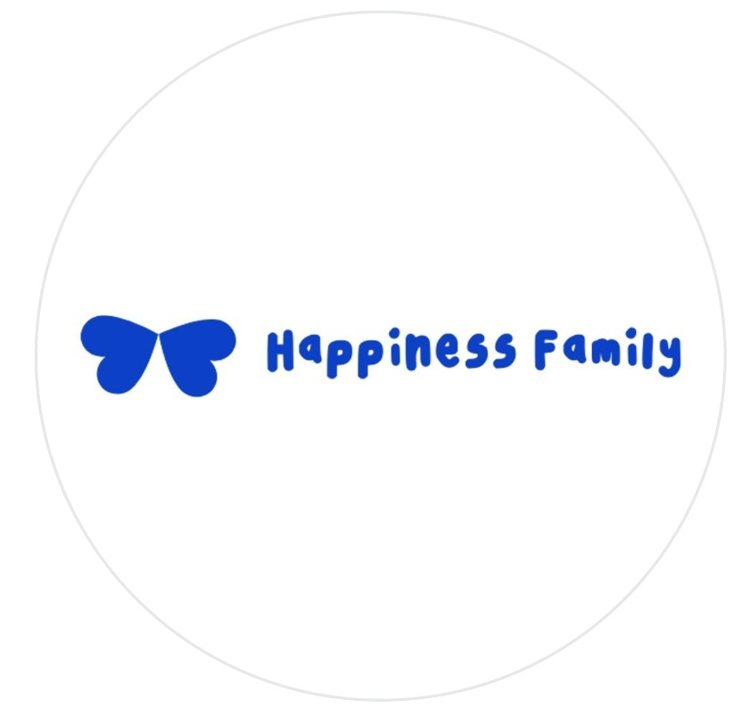
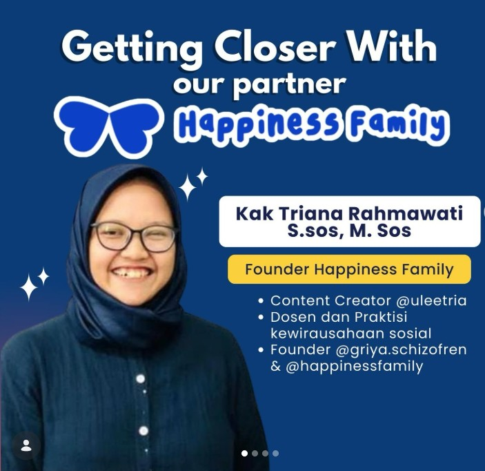

⌁
Mentorship
Dapatkan perspektif dan pendampingan dari orang-orang yang ingin melihatmu berkembang.
HAPPINESS FAMILY SCHOLARSHIP
Ruang bagi generasi muda Indonesia untuk belajar, bertemu mentor, membangun karya, dan menghadirkan dampak baik bersama keluarga yang suportif.
Sejak 2016
434 awardee telah bertumbuh bersama HapFam

Dokumentasi graduation
Happiness Family

KENAL LEBIH DEKAT
Happiness Family Scholarship (HapFam) adalah ruang pengembangan diri bagi anak muda yang ingin belajar, berkarya, dan memberi dampak. Di sini, perjalananmu didampingi oleh teman sebaya, mentor, dan komunitas yang saling menguatkan.
Lihat program kami →MENGAPA HAPFAM?
Dapatkan perspektif dan pendampingan dari orang-orang yang ingin melihatmu berkembang.
Asah kemampuan personal dan profesional melalui sesi belajar yang relevan.
Bertemu teman lintas daerah dan kampus yang membawa energi positif.
Ubah pembelajaran menjadi aksi lewat proyek dan kontribusi nyata.
RUANG BELAJAR KAMI
Sesuaikan deskripsi berikut dengan program resmi dan periode pendaftaran HapFam.
Mengenal diri, membangun kepercayaan diri, dan menguatkan kepemimpinan.
Belajar keterampilan yang dapat membantumu menjawab tantangan masa depan.
Mencipta solusi dan nilai lewat ide yang berpihak pada manfaat bersama.
Membangun koneksi yang tulus, suportif, dan terus saling menggerakkan.
PERJALANANMU DIMULAI DI SINI
Isi formulir pendaftaran saat periode seleksi dibuka.
Ikuti tahapan seleksi sesuai informasi resmi dari tim HapFam.
Mulai perjalanan belajar dan berkontribusi bersama keluarga HapFam.
DAMPAK KITA
Sejak 2016, HapFam telah menemani ratusan awardee dari berbagai penjuru Indonesia untuk menumbuhkan kapasitas, relasi, serta aksi sosial.
CERITA DARI KELUARGA
HapFam menjadi tempat untuk belajar berani mengambil peran dan bertemu orang-orang yang mengingatkan bahwa proses tidak harus dijalani sendiri.
Terima kasih Happiness Family yang sudah memeberi kesempatan untuk melihat dunia lebih luas lagi. Bertemu banyak orang keren dan terinspirasi untuk jadi keren juga. Tolong Lanjutkan Beasiswa ini karena banyak mahasiswa lain yang ingin terus bertumbuh juga

TENTANG KAMI
Bagian ini adalah tempat yang tepat untuk menyampaikan kisah berdirinya Happiness Family, visi para founder, dan alasan komunitas ini ada.
Gunakan narasi singkat yang hangat dan otentik, lalu tambahkan foto founder atau tim inti sebagai penguat kepercayaan.
Mari tumbuh bersama →NILAI YANG KAMI PEGANG
Bertumbuh dengan rasa syukur.
Tangguh dalam setiap proses.
Terbuka untuk terus belajar.
Berani memberi manfaat.
PERTANYAAN UMUM
Isi jawaban ini berdasarkan syarat pendaftar resmi HapFam, misalnya status pendidikan, domisili, atau batas usia.
Tambahkan informasi biaya dan ketentuan resmi dengan jelas di bagian ini.
Masukkan tanggal atau tautkan ke Instagram/form pendaftaran untuk pembaruan periode seleksi.
Jelaskan kanal, jadwal, dan mekanisme pengumuman yang digunakan tim HapFam.
More Information
Jadilah bagian dari perjalanan baik bersama Happiness Family.
Lihat Laporan Kontributor Kebahagiaan →